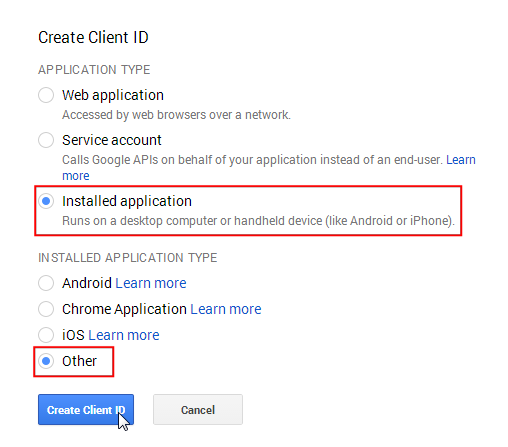

Automatizarea Fluxurilor de Lucru Complexe utilizând Modelatorul de Procese
Fluxurile de lucru GIS implică, de obicei, mai multe etape - cu fiecare pas se generează un rezultat intermediar care este utilizat în etapa următoare. Dacă schimbați datele de intrare sau doriți să reglați un parametru, va trebui să treceți prin întregul proces din nou, manual. Din fericire, QGIS are un modelator grafic încorporat care vă poate ajuta să definiți fluxul de lucru și să-l rulați cu o singură invocare. Puteți rula, de asemenea, acest lot de fluxuri de lucru pentru un număr mare de intrări.
Privire de ansamblu asupra activității
Acest tutorial vă arată cum să construiți un model pentru a extrage zonele unei anumite clase dintr-un raster cu o utilizare a terenului clasificată.
Procedura
Fluxul nostru de lucru pentru acest exercițiu va avea următoarele etape:
Aplicați un algoritm Majority Filter asupra rasterului de intrare, de acoperire a teritoriului. Acest lucru va reduce zgomotul în rezultatul nostru, prin eliminarea pixelilor izolați.
Conversia rasterului rezultat într-un strat poligonal.
Efectuați o interogare după valoarea unei clase din tabela de atribute a stratului poligonal, apoi creați un strat vectorial pentru această clasă.
Următorii pași conturează procesul de codificare a procesului de mai sus într-un model, pe care îl veți rula pe seturile de date descărcate.
Deschideți QGIS și mergeți la .

Dialogul Modelatorului de procese conține un panou în stânga și un canevas principal. Selectați fila Intrări din panoul din partea stângă, apoi trageți + Stratul raster pe canevas.

Se va afișa un dialog cu Definițiile Parametrului. Introduceți Input ca :guilabel: Nume al Parametrului și marcați Yes la Required. Faceți clic pe OK.

Veți vedea o casetă cu numele Input apărând în canevas. Aceasta reprezintă rasterul de acoperire a terenului, pe care îl vom folosi ca intrare. Următorul pas este aplicarea unui algoritm Majority filter. Mergeți în fila :guilabel: Algoritm din colțul din stânga-jos. Căutați algoritmul, care va fi listat sub furnizorul SAGA. Glisați-l pe canevas.
Note
Dacă nu vedeți acest algoritm sau pe oricare dintre algoritmii ulterior menționați în tutorial, ați putea folosi Simplified Interface din bara de instrumente Processing. Treceți în Interfața Avansată prin utilizarea casetei cu derulare verticală din partea de jos a bării de instrumente Processing, din fereastra principală a QGIS.

Va fi prezentat un dialog de configurare Majority Filter. Lăsați valorile implicite așa cum sunt și faceți clic pe OK.

Rețineți că de acum există pe canevas o nouă casetă denumită Majority Filter, acesta fiind conectată la caseta Input. Acest lucru se datorează faptului că algoritmul Majority Filter folosește rasterul Input ca intrare. Următorul pas al fluxului nostru de lucru, constă din convertirea ieșirii filtrului de majoritate în vector. Găsiți algoritmul Creare poligon (din raster în vector) și glisați-l pe canevas.
Note
Casetele pot fi mutate și aranjate, făcând clic pe ele și trăgându-le, în timp ce se menține apăsat butonul stâng al mouse-ului. Puteți utiliza, de asemenea, rotița de scroll, pentru redimensionarea canevasului modelului.

Selectați ‘Filtered Grid’ din algoritmul ‘Majority Filter’ ca valoare pentru Stratul de intrare. Clic OK.

Ultimul pas în fluxul de lucru este de a interoga valoarea unei clase, și de a crea un nou strat din entitățile identificate. Căutați algoritmul Extragere după atribute și glisați-l pe canevas.

Selectați ‘Vectorizat’, din algoritmul ‘Poligonizare (din raster în vector), ca Strat de Intrare. Dorim să extragem pixelii care reprezintă Lanurile de Grâu. Valoarea corespunzătoare pixelilor pentru această clasă este 12. (vedeți Codul Valorilor). Introduceți DN ca Atribut al selecției și 12 ca valoare. Deoarece rezultatul acestei operațiuni va fi cel final, va trebui să-i dăm un nume. Introduceți clasă vectorizată pentru Ieșire.

Introduceți vectorizare pentru Numele modelului și raster pentru Numele grupului. Clic pe butonul Salvare.

Denumiți modelul vectorize, apoi faceți clic pe Save.

Acum este timpul să testăm modelul. Închideți modelatorul și comutați în fereastra principală a QGIS. Mergeți la .

Navigați la fișierul descărcat, LC_hd_global_2001.tif.gz, apoi faceți clic pe Deschidere. O dată ce rasterul s-a încărcagt, mergeți la .

Găsiți modelul nou creat în . Faceți dublu clic pentru a lansa modelul.

Selectați LC_hd_global_2001 ca Input, apoi efectuați clic pe Run.

Veți vedea toți pașii executându-se fără a se face apel la utilizator. După ce se termină prelucrarea, un nou strat vectorized_class va fi adăugat în QGIS. Haideți să îmbunătățim modelul un pic. Faceți clic-dreapta pe modelul vectorizare și selectați Editare model.

La pasul 12, am hard-codat valoarea 12 ca valoare pentru clasă. În locul acestei operațiuni, o putem specifica ca parametru de intrare pe care utilizatorul îl poate schimba. Pentru aceasta, mergeți la fila Intrări și glisați + String în model.

Introduceți Class ca Nume al Parametrului. Introduceți 12 ca Valoare implicită.

Vom schimba acum algoritmul Extragere după atribute, pentru a utiliza această intrare în locul valorii hard-codate. Faceți clic pe butonul Editare, de lângă caseta Extragere după atribute.

Faceți clic pe săgeata verticală a Valorii și selectați Clasă. Faceți clic pe OK.

Veți vedea din diagrama modelului că algoritmul Extragere după atribute folosește acum 2 intrari. Modelatorul are o comandă rapidă pentru a lansa modelul și pentru a-l testa. Faceți clic pe butonul Rulare din bara de instrumente.

Observați că dialogul modelului are un nou câmp editabil denumit Clasă. Introduceți 16 ca valoare pentru Clasă, apoi faceți clic pe Rulare.

După ce prelucrarea se încheie, veți vedea că, doar cu o apăsare de buton am putut rula un flux de lucru complex, și să extragem zona pentru clasa 16.

Acum, că modelul nostru este gata, îl putem rula la fel de ușor pe un nou strat raster. Încărcați fișierul LC_hd_global_2012.tif.gz, mergând la . Clic pe modelul vectorizare`, din panoul Processing Toolbox.

Selectați LC_hd_global_2012 ca Intrare, apoi efectuați clic pe Rulare.

O dată ce noul rezultat este încărcat, puteți compara modificările Lanurilor, din 2001 până în 2012.

Este întotdeauna o idee bună să adăugați documentația pentru modelul dumneavoastră. Modelatorul are un Editor de Ajutor incorporat, care vă permite să înglobați documentația direct în model. Faceți clic dreapta pe modelul vectorizare și selectați Editare model.

Clic pe butonul Ajutorul Editării modelului din bara de instrumente

În dialogul Editorului de Ajutor, selectați oricare element din panoul Selectați elementul de editat, apoi introduceți textul de ajutor în Descriere Element. Faceți clic pe OK. Acest ajutor va fi disponibil în fila Ajutor atunci când veți lansa în execuție modelul.

Modelele vă pot ajuta să economisiți timp, permițându-vă să schițați fluxul de lucru o singură dată și să-l rulați de mai multe ori. Aveți chiar posibilitatea să partajați modelul cu alți utilizatori. Fișierele modelului sunt salvate în directorul .qgis2. Puteți trimite fișierul .model către un alt utilizator, care îl poate copia în directorul corespunzător de pe computerul său, după care va apărea în Instrumentarul Procesare. Locația directorului pentru modele depinde de platformă, după cum urmează: (Înlocuiți username cu numele de conectare)
Windows
c:\Users\username\.qgis2\processing\models\
Mac
/Users/username/.qgis2/processing/models/
Linux
/home/username/.qgis2/processing/models/